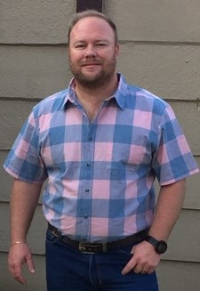

I started my career at Fuchs Electronics in 1999 as an electronic assistant. It was also the year that I started studing towards my diploma in electronics on a part-time basis. Unfortunately live happend
and I was not able to complete by studies. In 2017 I registered again and completed some outstanding subjects for that year, but due to familay responsibilities I was not able to carry on.
I'm an enthusiastic developer that enjoys working with technology. I have 15 years of electronic developement experience, that consisted of hardware and firmware develepment. I was also involved in writing
software programs that was used in conjuction with hardware.
About 6 years ago I started to broaden by knowledge and developed my first mobile application that ran on android and IOS. This was a big challange because I was introduced to databases, api's,
android studio, xcode just to name a few. The system consisted of 3 tiers namely: mobile platform(android/IOS), MySQL database with WebAPI and a windows application to upload clients details.
The project was a mobile app for a brokerage, this app was used to update client details, request services, and had a gps located panic button.
Since then I have developed various systems at home and for my current company, I have learned various new skills and technologies.
I have used technologies/methodolgies like .net, c#, bootstrap, mysql, mssql, web API, Web development, html, css, java for android, objective c.
I see myself as a self motivated, disciplined and honest individual with a drive for personal development and a love for writing software.